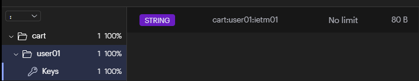

Redis教程
Redis
Redis是什么？
Redis是一个开源(BSD许可)的,内存中的数据结构存储系统,它可以用作数据库,缓存和消息中间件.它支持多种类型的数据结构,如字符串(strings) ,散列(hashes) ,列表(lists),集合(sets) ,有序集合(sorted sets)与范围查询,bitmaps,hyperloglogs和地理空(geospatial) 索引半径查询。Redis 内置了复制(replication) ，LUA脚本(Luascripting)，LRU驱动事件 (LRU eviction)，事务(transactions) 和不同级别的磁盘持久化(persistence)，并通过Redis哨兵(Sentinel) 和自动分区(Cluster) 提供高可用性(highavailability)。
- Redis支持的数据类型
- String 字符串
- List 列表
- Sets 集合
- Sorted Sets 有序集合
- Hash 散列
关系型数据库与非关系型数据库
关系型数据库
- 采用关系模型来组织模型的数据库,关系模型就是一个二维表格模型。一张二维表的表名就是关系,二维表中的一行就是一条记录，二维表中的一列就是一个字段
- 优点
- 容易理解
- 使用方便，通用的sql语言
- 易于维护,丰富的完整性(实体完整性、参照完整性和用户定义的完整性)大大降低了数据冗余和数据不一致的概率
- 缺点
- 磁盘I/O是并发的瓶颈
- 海量数据查询效率低
- 横向扩展困难，无法简单的通过添加硬件和服务节点来扩展性能和负载能立，当需要对数据库进行升级和扩展时，需要停机维护和数据迁移
- 多表的关联查询以及复杂的数据分析类型的复杂sql查询，性能欠佳。因为要保证acid原则,必须按照三范式设计
- 数据库
- Oracle，Sql Server，Mysql，DB2
非关系型数据库
- 非关系型,分布式，一般不保证遵循ACID原则的数据库存储系统。键值对存储,结构不稳定
- 优点
- 根据需要添加字段，不需要多表联查。仅需id取出对应的value
- 适用于SNS（社会化网络服务软件。比如Facebook，微博）
- 严格上讲不是一种数据库,而是一种数据结构化存储方法的集合
- 缺点
- 只适合存储一些较为简单的数据
- 不适合复杂查询的数据
- 不适合持久存储海量数据
- 数据库
- K-V: Redis,Memcache
- 文档：MonggoDB
- 搜索：Elasticsearch,Solr
- 可扩展性分布式：HBase
比较
| 内容 | 关系型数据库 | 非关系型数据库 |
| ————— | ——————————————— | ———————————————— |
| 成本 | 有些数据库需要收费(Orcale) | 基本都是开源的、免费的 |
| 查询数据 | 存储于硬盘中，速度慢 | 数据存于缓存中，内存中，速度快 |
| 存储格式 | 只支持基础类型 | K-V，文档，图片等 |
| 扩展性 | 有多表查询机制，扩展困难 | 数据之间没有耦合，容易扩展 |
| 持久性 | 适用持久存储，海量存储 | 不适用持久存储，海量存储 |
| 数据一致性 | 事务能力强，强调数据的强一致性 | 事务能力弱，强调数据的最终一致性 |
Redis-cli操作Redis
1 | <dependency> |
操作String
1 | slect index /*可以选择操作的数据库 redis没有数据表的概念但是又数据库的概念*/ |
操作Hash
1 | 127.0.0.1:6379> hset user name zhangsan |
操作List
1 | 127.0.0.1:6379> lpush students zhangsan lisi wangwu zhaoliu |
操作Set
1 | 127.0.0.1:6379> sadd letters aaa bbb ccc ddd eee fff |
操作Sorted Set
1 | 127.0.0.1:6379> zadd students1 1 zhangsan 4 wangwu 2 zhaoliu 10 tianqi |
通用Redis-cli的命令
1 | 127.0.0.1:6379> set cart:user01:ietm01 apple |

EXPIRE key tt1 :用于将键key的生存时间设置为tt1秒。
PEXPIRE key tt1' :用于将键key的生存时间设置为tt1秒。
EXPIREAT key timestamp :用于将键key的过期时间设置为 timestamp所指定的秒数时间戳。
PEXPIREAT key timestamp :用于将键key的过期时间设置为 timestamp所指定的毫秒数时间戳。
TTL :获取的值为-1说明此key没有设置有效期，当值为-2时证明过了有效期。
Java操作Redis
SpringBoot导入了NoSql依赖中的Redis1.x的版本默认采用的连接技术是Jedis,2.0以上的版本默认连接池是Lettuc。
Nedis是线程安全的,Jedis线程不安全,因为在多个线程共享一个实例,所以他是线程不安全的，要想在多线程使用Jedis就必须要用到线程池。
1 | spring: |
bgsave rdb aof 大于百分之不可用 集群超过50%就不可用了 主从 读写分离 哨兵机制 主备切换 sentinel 哨兵